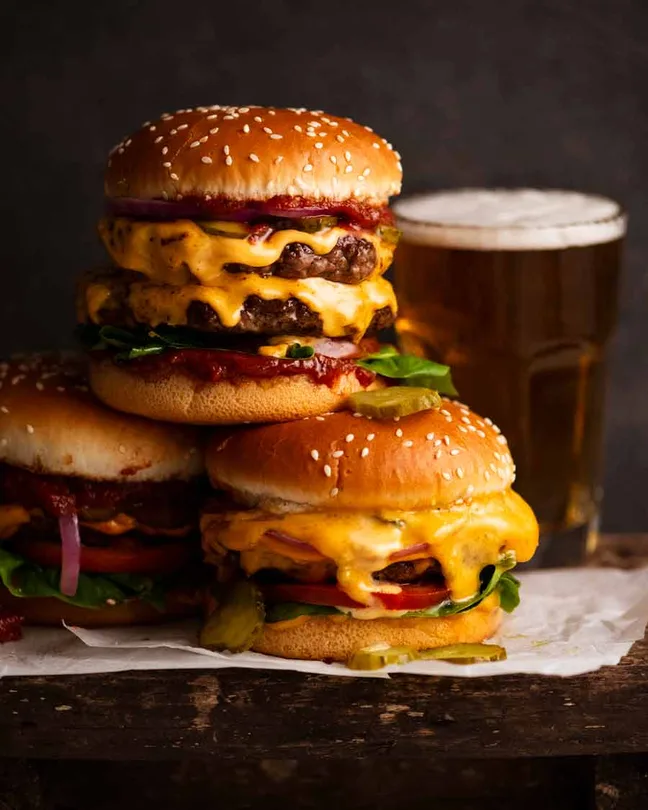

CheeseBurger-Double or Single

Description
This cheeseburger recipe assumes your bun is 10cm/4" wide. If it's larger, you may want to scale up the beef so you don't end up with wafer-thin patties or a burger patty that's much smaller than your bun. Nobody likes biting into bread with no beef!!
Ingredients
- SINGLE CHEESEBURGERS:
- 600 g / 1.2 lb beef mince (ground beef) , at least 20% fat (Note 1 for quality)
- DOUBLE CHEESEBURGER:
- 1.2 kg / 2.4 lb beef mince (ground beef) , at least 20% fat (Note 1 for quality)
- COOKING
- 1/8 tsp each salt and pepper PER burger
- 2 – 3 tbsp canola oil
- EVERYTHING ELSE YOU NEED:
- 4 soft burger buns or rolls , around 10cm/4″ wide (Note 2)
- 4 – 8 slices burger cheese (American) or other cheese or choice (Note 3)
- 8 cos/romaine lettuce leaves , torn to size (or shredded iceberg)
- 2 large tomatoes , cut into eight 7mm/ 1/4" slices
- 1 red onion , finely sliced into rings (Note 4)
- 2 large gherkins , finely sliced (Note 5)
- SOUCE OPTION
- Special Burger Sauce (creamy orangey/pink one, quick no cook)
- Tomato chutney for burgers
- Ketchup
- Mustard
- ON THE SIDE
- ▢French fries (and it’s epic!)
Home